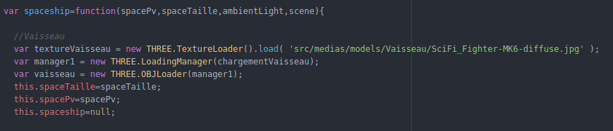
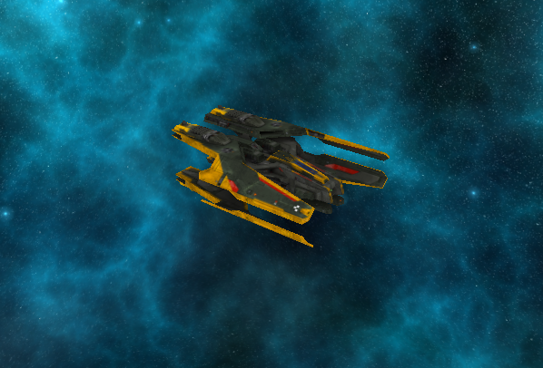

Tout d'abord, j'ai commencer ce projet avec l'idée de vouloir un vaisseau réaliste. Avec quelques recherches j'ai vue qu'il était possibles de charger un objet OBJ à l'aide de THREE.js. Pour cela j'ai continué mes recherches en espérant trouver un Vaisseau.obj. Toujours quelques recherches plus tard j'avais mon Vaisseau, il ne me manquer plus qu'a le charger. La Bibliothèque THREE.js ma donner la solution de la manière suivante
Le code ci dessous ma permis non seulement de charger le vaisseau mais également de lui appliquer une texture avec THREE.TextureLoader(). Nous avons rajouté a notre object vaisseau une taille et des Point de Vie
Nous allons voir maintenant comment cela apparait dans notre Navigateur :
Notre vaisseau enfin chargé, il lui faut maintenant des ennemis